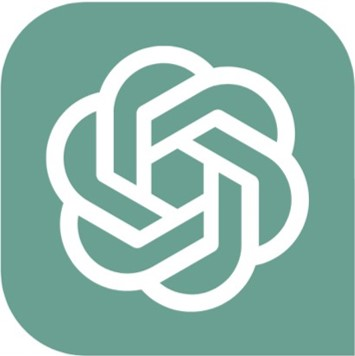

|  | |
| 분류 | LLMs 대화형 인공지능 |
|---|---|
| 서비스 | 부분적 유료 |
| 개발사 | OpenAI |
| 발표일 |
2022년 11월 30일(초기 베타) 2023년 5월 24일(안정화 베타) |
| 모바일 | iOS | iPadOS |
| 기반 | GPT-3.5 | GPT-4 |
| 사용자 | 약 2억명 (2023년 2월 / 추정치) |
| 구독자 | 약 100만명 (2023년 2월 / 추정치) |
| gpt 링크 | 사용하러 가기 |
ChatGPT(챗GPT)는 GPT-3.5와 GPT-4를 기반으로 하는 대화형 인공지능 서비스이다. OpenAI 플랫폼에 회원가입 후, 무료 혹은 유료 구독제(ChatGPT Plus)로 이용할 수 있으며, 회원가입을 하고, 채팅을 하듯이 챗봇에 질문을 입력하는 것만으로 AI를 이용할 수 있다. 스마트폰으로도 OpenAI 플랫폼에 들어가면 이용할 수 있다. 여기서 입력하는 대화문을 '프롬프트(Prompt)'라고 하며, 이에 대한 AI의 답변을 '응답(Response)' 생성된다고 표현한다. 각 대화방의 이름은 대화를 하자마자 첫 질문과 답변에 맞게 생성되지만, 언제든지 변경할 수 있다. 2023년 3월 14일, OpenAI의 최신 언어모델인 GPT-4가 출시되었으며, 현재 ChatGPT Plus 가입자만 사용할 수 있다. 2023년 3월 23일에는 ChatGPT plugins가 공개되었다. 웹 브라우징, 코드 해석 등 OpenAI 자체 플러그인과 Wolfram Alpha, Zaiper, OpenTable 등 타사의 외부 플러그인이 적용되었다. 2023년 5월부터 ChatGPT Plus 구독자 한정으로 GPT-4 웹 브라우징 모드를 추가했다. 이 모드를 이용할 경우 Bing AI처럼 인터넷을 검색하여 정보를 알려 준다. Bing AI와 마찬가지로 크롤링한 페이지의 출처도 제공한다. 이로서 시시각각으로 변하는 오늘의 날씨나 환율, 주가와 같은 최근 정보까지 알려줄 수 있게 되었다. 단, 크롤링을 하는 과정에 따라 필연적으로 답변 생성 속도가 느려질 수 밖에 없고 더 많은 페이지를 크롤링하게 되면 답변 하나를 얻는데 수 분 이상이 걸릴 수 있다. 또한 GPT-4가 신뢰성 있는 웹 사이트의 정보를 최우선적으로 얻는다고 할지라도 크롤링을 통해 얻은 데이터는 상대적으로 환각 오류를 일으킬 가능성이 때문에 크롤링한 출처를 확인해서 정확한 정보인지를 정확히 판단하는 것이 중요하다. BingAI가 그랬듯, 검색을 괴상한 키워드로 하여 성능을 깎아먹을 수 있다는 점도 주의. 장기적으로는 ChatGPT의 앱스토어 역할을 할 것으로, 현재의 구글 플레이나 앱스토어 등 모바일 앱 ESD를 대체할 것으로 보인다. 데스크탑이나 노트북에서 줄바꿈은 시프트 키와 엔터 키를 동시에 눌러서 사용할 수 있고, 스마트폰에서는 전송 버튼을 누르기 전까지는 채팅이 전송되지 않으므로, 자판에서 엔터에 해당하는 부분을 터치하여 사용할 수 있다. 또한, 답변이 생성되는 도중 'Stop generating' 버튼으로 답변 생성을 멈출 수 있다. 그리고 대화방의 모든 질문은 수정이 가능하지만, 그 대화가 수정된 이후에는 그 대화 시점 이후 자신이 입력했던 기존 프롬프트는 사라지며, 새로운 대화가 이어진다. 이미 생성된 응답도 'Regenerate response'를 눌러서 다시 응답을 생성하게 할 수 있다. 답변이 마음에 들지 않으면, Try Again 버튼으로 다른 답변을 요청할 수 있으며, 현재 답에 대해 좋아요(👍) 또는 싫어요(👎) 아이콘을 눌러 평가할 수 있다. 도중에 네트워크 불안정이나 웹 브라우저 문제 등으로 답변이 끊길 경우, 프롬프트로 “계속 말해 줘.”, “our response was interrupted.”, “Keep going.” 등을 입력하여 답변이 끊겼다는 사실을 어필해주면 끊긴 부분부터 다시 답변해 준다. 2023년 5월 16일부터는 답변이 글자 수 제한 등으로 끊겼을 경우, Continue generating 버튼을 클릭하면 기존 메시지에서 끊긴 부분부터 답변을 이어서 작성한다. 무료 버전으로도 '대화'를 하는 언어모델인 GPT-3.5 모델을 이용할 수 있으며, 플러스에 해당하는 유료 버전은 GPT-4 모델과 GPT-3.5에 해당하는 기본 모델을 이용할 수 있다. 초기 유료 버전은 각 모델의 세 가지 스펙을 알려주었는데, GPT-4는 속도가 느리고, 프롬프트 입력 갯수 제한까지 걸려 있지만, 추론을 더욱 많이 거치기 때문에 정확한 정보가 나온다. 현재는 그냥 모델에 대한 설명(유용한 용도, 성능에 대해) 간단히 나온다. 월 20달러를 지불해야 하며, 유료로 전환하더라도 무료 버전의 대화 내역이 삭제되지는 않는다. GPT-4모델을 사용할 때의 색은 초록색이 아니라 검정색 아이콘으로 사용자의 '대화'의 상대방인 모델이 묘사되었다. 현재는 보라색이다. 플러그인이 설치되고 사용자의 프롬프트에서 플러그인을 가동할 조건이 발견되면 플러그인이 발동되면서 그 아이콘이 플러그인이 가동되는 동안 플러그인에 맞게 바뀐다. 2023년 4월 25일, 대화 내역 중 한 부분이나 전부를 내보낼 수 있는 기능이 추가되었다. 민감한 정보를 다루는 경우에 대비하여 불건전한 사용 시에만 OpenAI 등에서 확인 가능한 채팅 내역을 저장하지 않는 기능이 추가되었고, 기업용 구독제도 향후 출시 예정이라고 OpenAI 측에서 밝혔다. ChatGPT는 사용자와 주고받는 대화에서 인공지능에 따라서 질문에 답하도록 설계된 언어 모델이며, OpenAI는 블로그 게시글을 통해 “ChatGPT가 대화 형식으로 추가적인 질문에 답하고, 실수를 인정하며, 정확하지 않은 전제에 대해서는 이의를 제기하고, 부적절한 요청을 거부할 수 있다”고 설명했다.